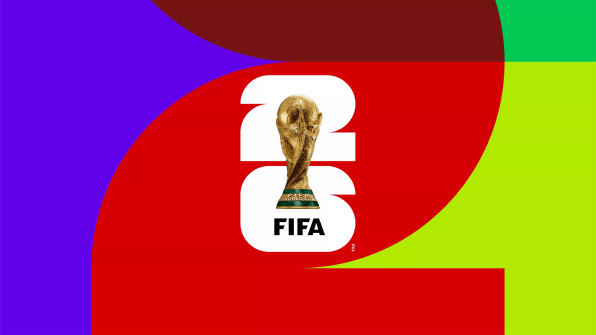
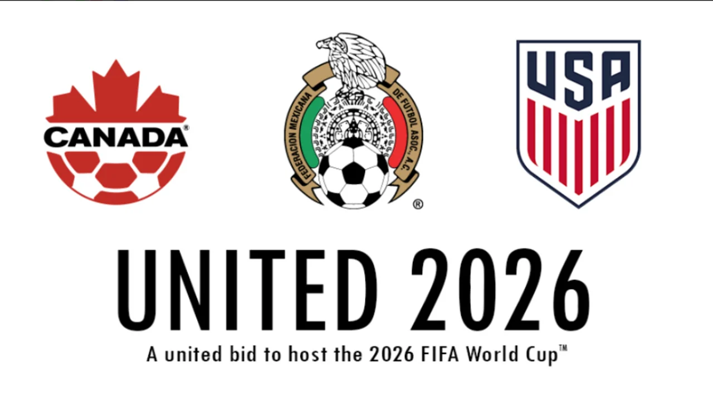
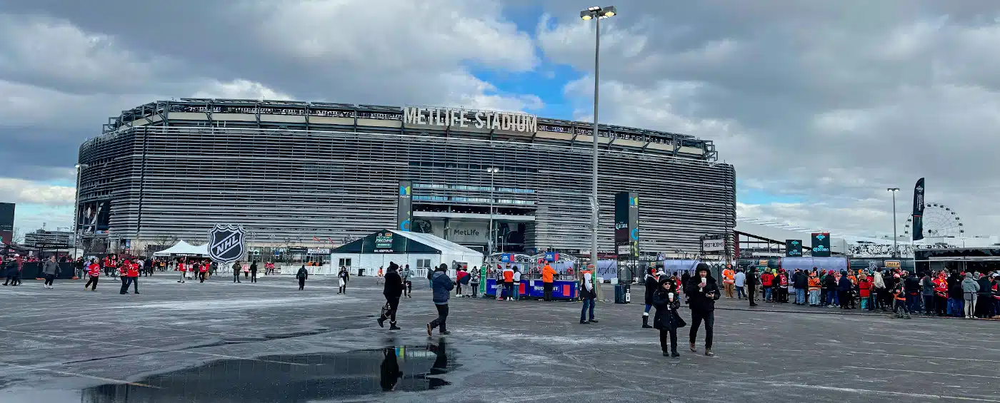

Os jogos serão realizados em três países da América do Norte: Estados Unidos, Canadá e México. Essa parceria histórica permitirá que milhões de torcedores acompanhem partidas em estádios modernos e cidades icônicas, proporcionando uma experiência única para atletas e fãs do futebol.

Após semanas de disputa, emoção e superação, apenas duas seleções terão o privilégio de chegar ao maior palco desta Copa do Mundo: o MetLife Stadium. Será lá, no dia 19 de julho de 2026, que o mundo inteiro voltará seus olhos para a grande final. Noventa minutos separarão duas nações da eternidade. Apenas uma levantará a taça mais cobiçada do futebol mundial e escreverá seu nome para sempre na história da Copa do Mundo FIFA 2026.